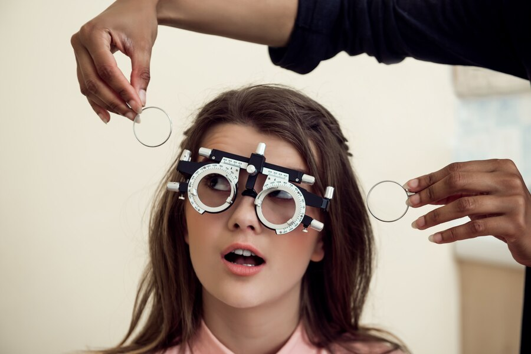
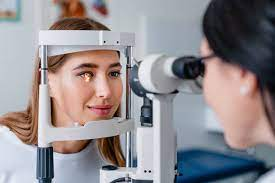
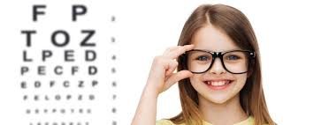

الليزك
الليزك هو علاج سريع وناجح للغاية لتحسين الرؤية بشكل دائم وتجنب الحاجة إلى استخدام النظارات أو العدسات اللاصقة. لكن، ما الفرق بين الليزر و الفيمتوليزر ؟
يتميز الفيمتوليزر عن الليزر العادى بأنه أعلى درجات الليزر دقة وسرعة وطاقة و يغنى الفيمتوليزر الطبيب تماماً عن استخدام المشرط الجراحى و بالتالى تكون الفتحة جراحية أصغر ما يمكن مما يساعد في التئام الأنسجة سَريعا و يقل احتمال حدوث إلتهابات داخل العين لصغر حجم الجرح الفيمتوليزيك هو تطبيق جديد للآكسيمر ليزر يتم توليده اعتمادا على نظرية العالم الكبير أحمد زويل، ويتميز بأنه أعلى درجات الليزر دقة وسرعة وطاقة، ويستطيع اختراق جميع طبقات القرنية دون استعمال أى مشرط جراحى أو لمس العين تماما، مما يحقق درجة أمان عالية ودقة متناهية تضمن عدم رجوع عيب الإبصار مرة أخرى
عيون كلينك فى خدمتك 24 ساعة